File: 000090.gt.txt (if the image is defective, simply delete all Arabic text and the line will be excluded)
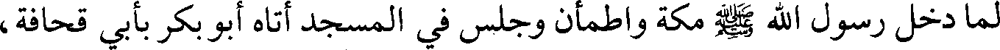
لما دخل رسول الله صلعم مكة واطمأن وجلس في المسجد أتاه أبو بكر بأبي قحافة،
File: 000091.gt.txt (if the image is defective, simply delete all Arabic text and the line will be excluded)
فلما رآه رسول الله صلعم قال: «يا أبا بكر، ألا تركت الشيخ حتى أكون أنا الذي أمشي
File: 000092.gt.txt (if the image is defective, simply delete all Arabic text and the line will be excluded)
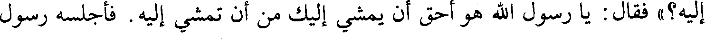
إليه؟» فقال: يا رسول الله هو أحق أن يمشي إليك من أن تمشي إليه. فأجلسه رسول
File: 000093.gt.txt (if the image is defective, simply delete all Arabic text and the line will be excluded)
الله صلعم بين يديه ووضع يده على قلبه، ثم قال: «يا أبا قحافة، أسلم تسلم». قال:
File: 000094.gt.txt (if the image is defective, simply delete all Arabic text and the line will be excluded)
154
File: 000095.gt.txt (if the image is defective, simply delete all Arabic text and the line will be excluded)
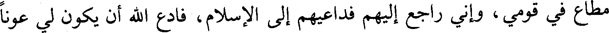
مطاع في قومي، وإني راجع إليهم فداعيهم إلى الإسلام، فادع الله أن يكون لي عونا
File: 000096.gt.txt (if the image is defective, simply delete all Arabic text and the line will be excluded)
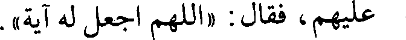
عليهم، فقال: «اللهم اجعل له آية».
File: 000097.gt.txt (if the image is defective, simply delete all Arabic text and the line will be excluded)
فخرجت إلى قومي حتى إذا كنت بثنية تطلعني على الحاضر وقع نور بين عيني
File: 000098.gt.txt (if the image is defective, simply delete all Arabic text and the line will be excluded)
مثل المصباح، فقلت: اللهم في غير وجهي، فإني أخشى أن يظنوا بي مثلة وقعت في
File: 000099.gt.txt (if the image is defective, simply delete all Arabic text and the line will be excluded)
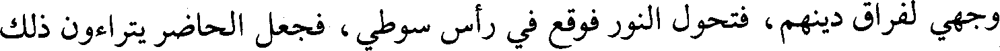
وجهي لفراق دينهم، فتحول النور فوقع في رأس سوطي، فجعل الحاضر يتراءون ذلك
File: 000100.gt.txt (if the image is defective, simply delete all Arabic text and the line will be excluded)
النور في سوطي كالقنديل المعلق، فأتاني أبي فقلت له: إليك عني فإنك لست من
File: 000101.gt.txt (if the image is defective, simply delete all Arabic text and the line will be excluded)
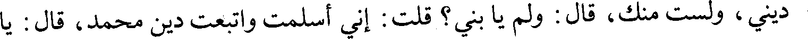
ديني، ولست منك، قال: ولم يا بني؟ قلت: إني أسلمت واتبعت دين محمد، قال: يا
File: 000102.gt.txt (if the image is defective, simply delete all Arabic text and the line will be excluded)
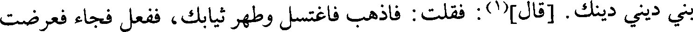
بني ديني دينك. [قال](1): فقلت: فاذهب فاغتسل وطهر ثيابك، ففعل فجاء فعرضت
File: 000103.gt.txt (if the image is defective, simply delete all Arabic text and the line will be excluded)
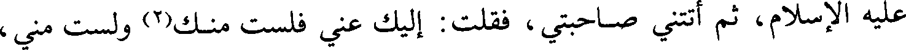
عليه الإسلام، ثم أتتني صاحبتي، فقلت: إليك عني فلست منك(2) ولست مني،
File: 000104.gt.txt (if the image is defective, simply delete all Arabic text and the line will be excluded)
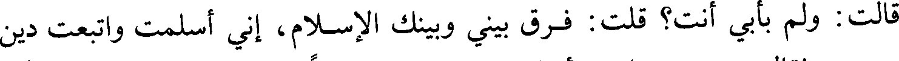
قالت: ولم بأبي أنت؟ قلت: فرق بيني وبينك الإسلام، إني أسلمت واتبعت دين
File: 000105.gt.txt (if the image is defective, simply delete all Arabic text and the line will be excluded)
57/أ محمد، فقالت: ديني دينك، فأسلمت، ثم دعوت دوسا إلى الإسلام / فأبطأوا علي،
File: 000106.gt.txt (if the image is defective, simply delete all Arabic text and the line will be excluded)
ثم جئت رسول الله صلعم، فقلت: قد غلبتني دوس فادع الله عليهم، فقال: «اللهم اهد
File: 000107.gt.txt (if the image is defective, simply delete all Arabic text and the line will be excluded)
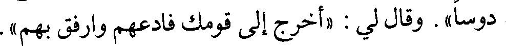
دوسا» . وقال لي: «اخرج إلى قومك فادعهم وارفق بهم».
File: 000108.gt.txt (if the image is defective, simply delete all Arabic text and the line will be excluded)
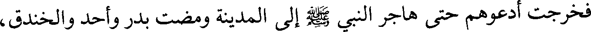
فخرجت أدعوهم حتى هاجر النبي صلعم إلى المدينة ومضت بدر وأحد والخندق،
File: 000109.gt.txt (if the image is defective, simply delete all Arabic text and the line will be excluded)
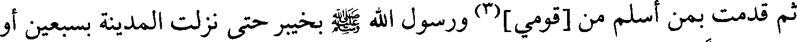
ثم قدمت بمن أسلم من [قومي](3) ورسول الله صلعم بخيبر حتى نزلت المدينة بسبعين أو
File: 000110.gt.txt (if the image is defective, simply delete all Arabic text and the line will be excluded)
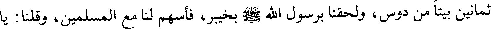
ثمانين بيتا من دوس، ولحقنا برسول الله صلعم بخيبر، فأسهم لنا مع المسلمين، وقلنا: يا
File: 000111.gt.txt (if the image is defective, simply delete all Arabic text and the line will be excluded)
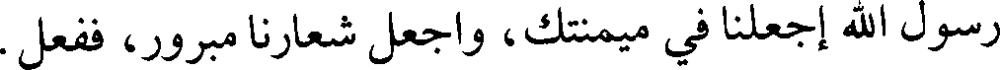
رسول الله اجعلنا في ميمنتك، واجعل شعارنا مبرور، ففعل.
File: 000112.gt.txt (if the image is defective, simply delete all Arabic text and the line will be excluded)
فلم أزل مع النبي صلعم حتى فتح مكة، فقلت: ابعثني يا رسول الله إلى ذي
File: 000113.gt.txt (if the image is defective, simply delete all Arabic text and the line will be excluded)
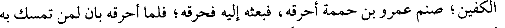
الكفين؛ صنم عمرو بن حممة أحرقه، فبعثه إليه فحرقه؛ فلما أحرقه بان لمن تمسك به
File: 000114.gt.txt (if the image is defective, simply delete all Arabic text and the line will be excluded)
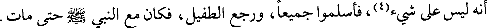
أنه ليس على شيء[4] ، فأسلموا جميعا، ورجع الطفيل، فكان مع النبي صلعم حتى مات
File: 000115.gt.txt (if the image is defective, simply delete all Arabic text and the line will be excluded)
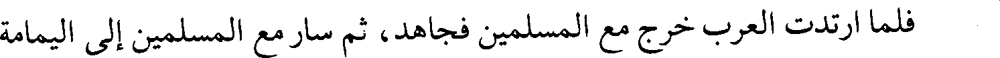
فلما ارتدت العرب خرج مع المسلمين فجاهد، ثم سار مع المسلمين إلى اليمامة
File: 000116.gt.txt (if the image is defective, simply delete all Arabic text and the line will be excluded)
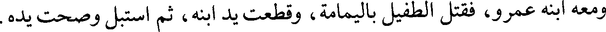
ومعه ابنه عمرو، فقتل الطفيل باليمامة، وقطعت يد ابنه، ثم استبل وصحت يده.
File: 000117.gt.txt (if the image is defective, simply delete all Arabic text and the line will be excluded)
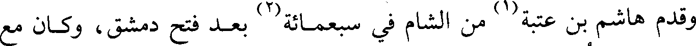
وقدم هاشم بن عتبة(1) من الشام في سبعمائة(2) بعد فتح دمشق، وكان مع
File: 000118.gt.txt (if the image is defective, simply delete all Arabic text and the line will be excluded)
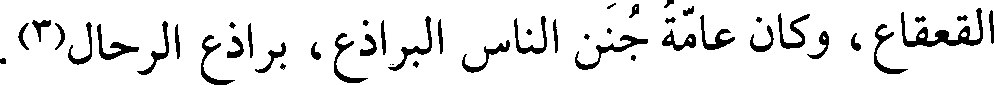
القعقاع، وكان عامة جنن الناس البراذع، براذع الرحال(3).
File: 000119.gt.txt (if the image is defective, simply delete all Arabic text and the line will be excluded)
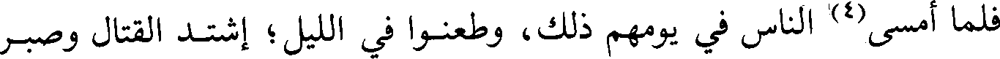
فلما أمسى(4) الناس في يومهم ذلك، وطعنوا في الليل؛ إشتد القتال وصبر
To Save: `Ctrl+s`, make sure to choose `Webpage, complete`!